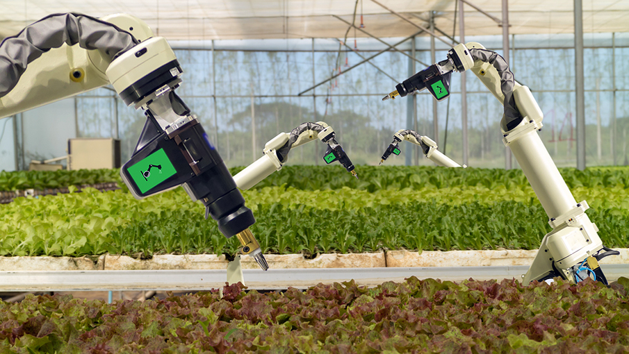
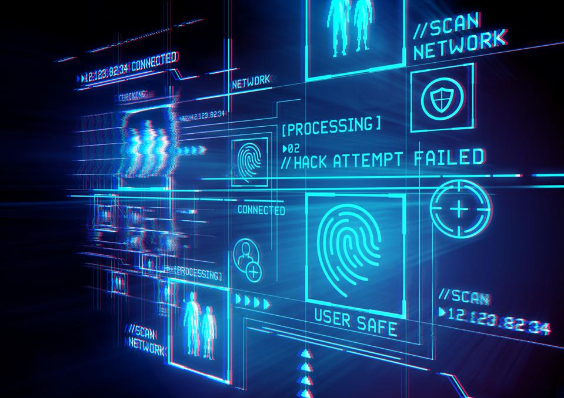
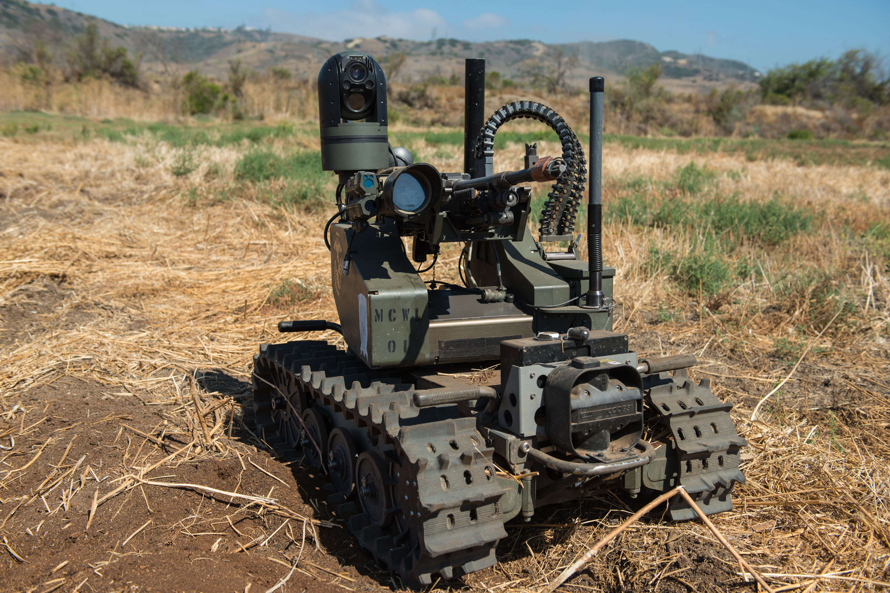
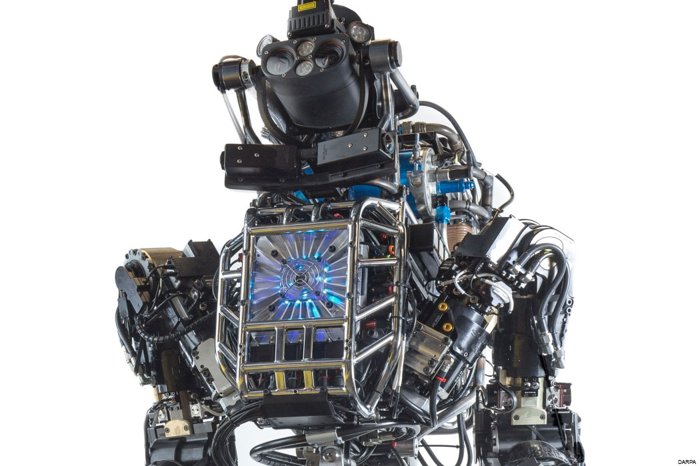

Agriculture
In agriculture new AI advancements show improvements in gaining yield and
to increase the research and development of growing crops. New artificial
intelligence now predicts the time it takes for a crop like a tomato to be ripe and ready for
picking thus increasing efficiency of farming. These advances go on
including Crop and Soil Monitoring, Agricultural Robots, and Predictive Analytics. Crop and soil
monitoring uses new algorithms and data collected on the field
to manage and track the health of crops making it easier and more sustainable for the farmers.

More specializations of AI in agriculture is one such as greenhouse automation, simulation, modeling, and optimization techniques.
Due to the increase in population and the growth of demand for food in the future, there will need to be at least a 70% increase in yield from agriculture to
sustain this new demand. More and more of the public perceives that the adaption of these new techniques and the use of Artificial intelligence will help
reach that goal.

Cybersecurity
The cybersecurity arena faces significant challenges
in the form of large-scale hacking attacks of different types that harm organizations of all kinds and create
billions of dollars in business damage. Artificial intelligence and Natural Language
Processing (NLP) has begun to be used by security companies - for example,
SIEM (Security Information and Event Management) solutions. The more advanced of
these solutions use AI and NLP to automatically sort the data in networks
into high risk and low-risk information. This enables security teams to focus on the attacks
that have the potential to do real harm to the organization, and not
become victims of attacks such as Denial of Service (DoS), Malware and others.

Education
AI tutors could allow for students to get extra, one-on-one help. They could also reduce anxiety and stress for some students, that may be caused by tutor labs
or human tutors. In future classrooms, ambient informatics can play a beneficial role. Ambient informatics is the idea that information is everywhere in the
environment and that technologies automatically adjust to your personal preferences. Study devices could be able to create lessons, problems, and games to
tailor to the specific student's needs, and give immediate feedback.
Finance
Financial institutions have long used artificial neural network systems to detect charges or claims outside of the norm, flagging these for human investigation.
The use of AI in banking can be traced back to 1987 when Security Pacific National Bank in the US set-up a Fraud Prevention Task force to counter the
unauthorized use of debit cards. Programs like Kasisto and Moneystream are using AI in financial services.
Banks use artificial intelligence systems today to organize operations, maintain book-keeping, invest in stocks, and manage properties. AI can react to changes
overnight or when business is not taking place. In August 2001, robots beat humans in a simulated financial trading competition. AI has also reduced fraud
and financial crimes by monitoring behavioral patterns of users for any abnormal changes or anomalies.
AI is increasingly being used by corporations. Jack Ma has controversially predicted that AI CEO's are 30 years away.
The use of AI machines in the market in applications such as online trading and decision making has changed major economic theories. For example, AI
-based buying and selling platforms have changed the law of supply and demand in that it is now possible to easily estimate individualized demand and supply
curves and thus individualized pricing. Furthermore, AI machines reduce information asymmetry in the market and thus making markets more efficient while
reducing the volume of trades[citation needed]. Furthermore, AI in the markets limits the consequences of behavior in the markets again making markets more
efficient.Other theories where AI has had impact include in rational choice, rational expectations, game theory, Lewis turning point,
portfolio optimization and counterfactual thinking.In August 2019, the AICPA introduced an AI training course for accounting professionals.
Military
The United States and other nations are developing AI applications for a range of military functions. The main military applications of Artificial Intelligence and
Machine Learning are to enhance C2, Communications, Sensors, Integration and Interoperability. AI research is underway in the fields of intelligence
collection and analysis, logistics, cyber operations, information operations, command and control, and in a variety of semiautonomous and autonomous vehicles.
Artificial Intelligence technologies enable coordination of sensors and effectors, threat detection and identification, marking of enemy positions,
target acquisition, coordination and deconfliction of distributed Join Fires between networked combat vehicles and tanks also
inside Manned and Unmanned Teams (MUM-T). AI has been incorporated into military operations in Iraq and Syria.

Worldwide annual military spending on robotics rose from US$5.1 billion in 2010 to US$7.5 billion in 2015.
Military drones capable of autonomous action are widely considered a useful asset.
Many artificial intelligence researchers seek to distance themselves from military
applications of AI.

Medicine
There are tasks in medicine that can potentially be performed by artificial intelligence and are beginning to be developed include:
- Heart sound analysis
- Computer-aided interpretation of medical images. Such systems help scan digital images, e.g. from computed tomography, for typical appearances and to highlight conspicuous sections, such as possible diseases. A typical application is the detection of a tumor.
- Companion robots for the care of the elderly.
- Mining medical records to provide more useful information.
- Design treatment plans.
- Assist in repetitive jobs including medication management.
- Assisting blind people.
- Provide consultations.
- Drug creation.
- Using avatars in place of patients for clinical training.
- Predict the likelihood of death from surgical procedures.
- Predict HIV progression.